Client Sign up screen
kazi/app/java/ke.co.kaziapp/ui/v1/register activity.kt(class RegisterActivity : NetworkSensingBaseActivity)

Client Verification for verifying the new account
kazi/appjava/ke.co.kaziapp/ui/v1/GetOtpActivity.kt(class GetOtpActivity : NetworkSensingBaseActivity)
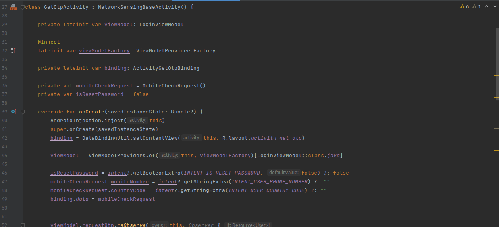
Client Login screen
kazi/app/java/ke.co.kaziapp/ui/v1/login activity.kt(class LoginActivity : NetworkSensingBaseActivity)
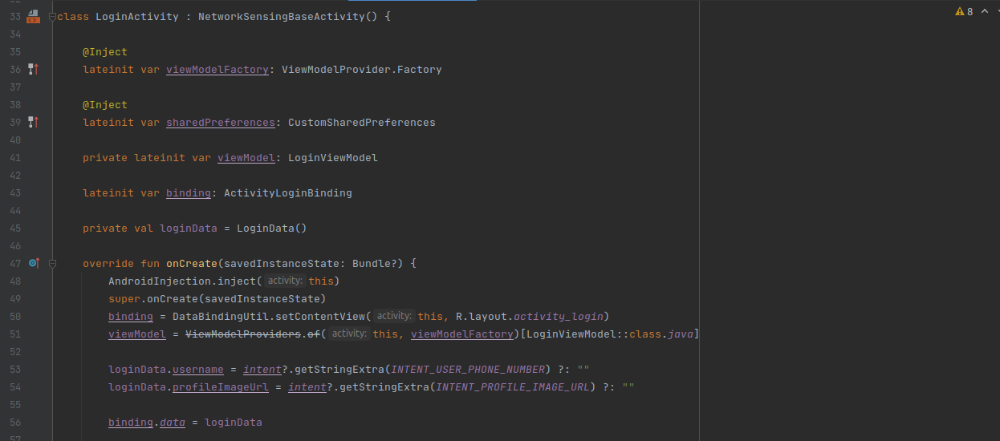
Client Verification for verifying the existing account
kazi/app/java/ke.co.kaziapp/ui/v1/GetOtpActivity.kt(class GetOtpActivity : NetworkSensingBaseActivity)
Client set up profile screen
kazi/app/java/ke.co.kaziapp/ui/v1/profilesetting activity.kt(class ProfileSettingsActivity NetworkSensingBaseActivity)
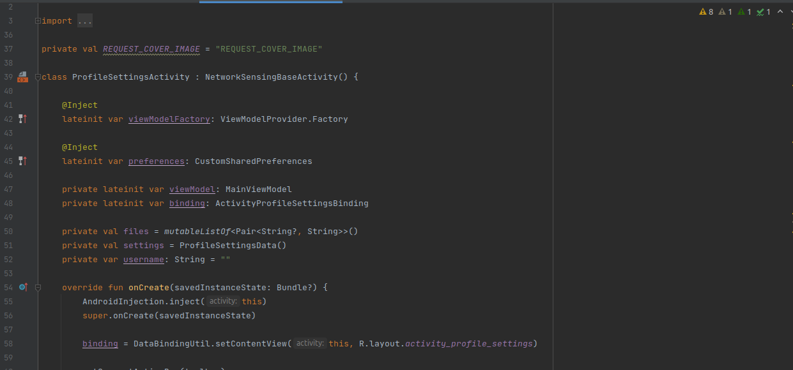
Client Validation for validating if the client have entered the valid credentials of profile setup.
kazi/app/java/ke.co.kaziapp/ui/v1/profilesetting activity.kt(private fun validate)
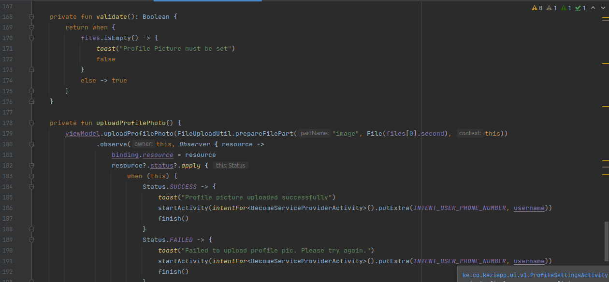
Notification screen to notify the client of the new services that are available in the application.
kazi/app/java/ke.co.kaziapp/src/main/view/client/inbox/notifications/InboxNotificationsAdapter.kt
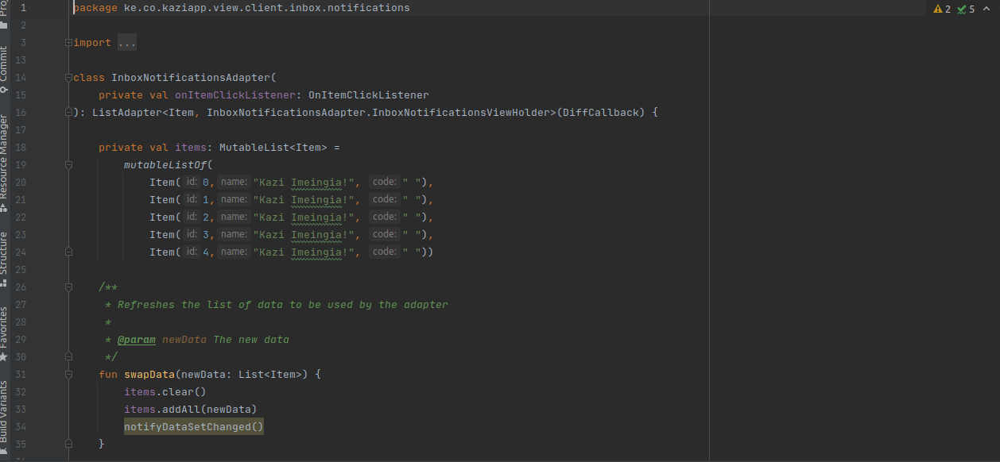
Client reset password screen
kazi/app/java/ke.co.kaziapp/ui/v1/forgot password Activity/private fun resetPassword
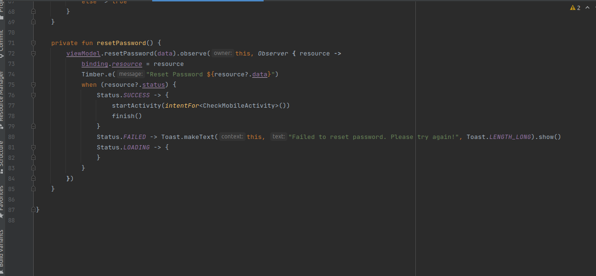
Explore service screen
kazi/app/java/ke.co.kaziapp/ui/v1/servicelistActivity( class ServicesListActivity : NetworkSensingBaseActivity
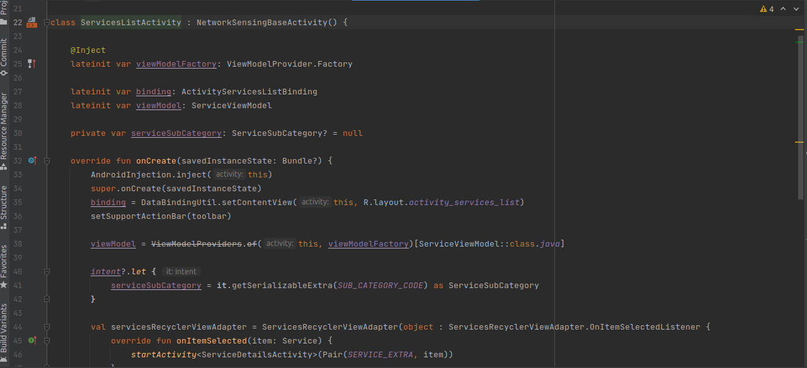
Validation to validate if the user have entered the valid credentials.
kazi/app/java/ke.co.kaziapp/ui/v1/profilesetting activity.kt( private fun validate)
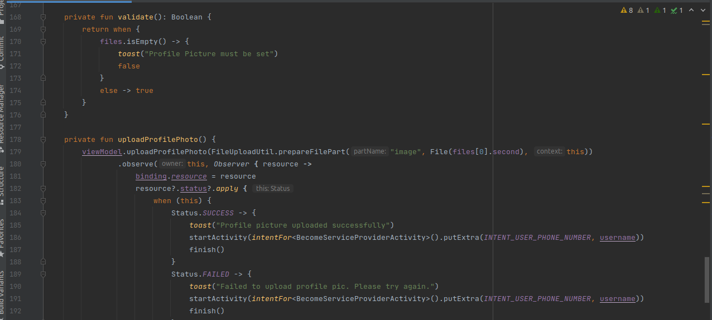
Explore Service category screen
kazi/app/java/ke.co.kaziapp/ui/v1/service category Activity.kt(class ServiceSubCategoryActivity : NetworkSensingBaseActivity)
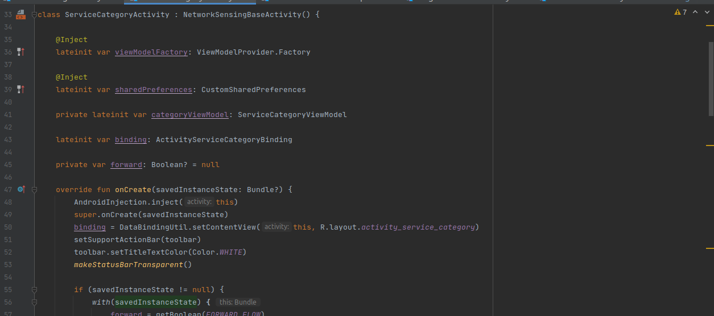
Service sub-category screen
kazi/app/java/ke.co.kaziapp/ui/v1/servicesubcategoryActivity,kt(class ServiceSubCategoryActivity : NetworkSensingBaseActivity)
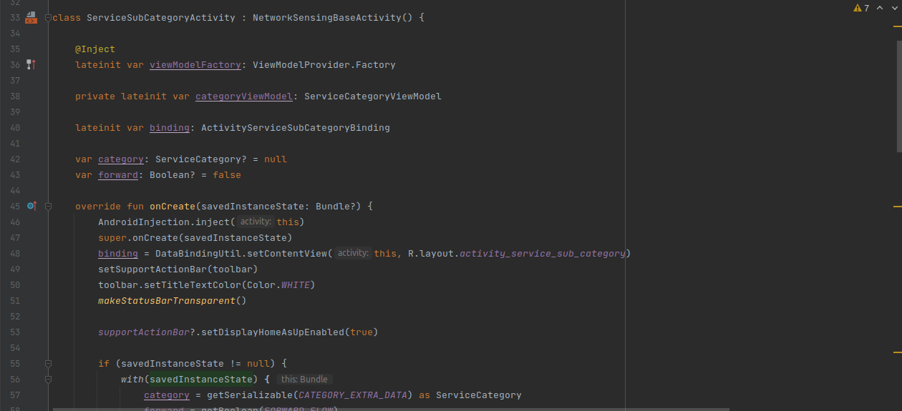
Service provider screen
kazi/app/java/ke.co.kaziapp/ui/v1/serviceproviderinfoActivity,kt( class ServiceProviderInfoActivity : AppCompatActivity)
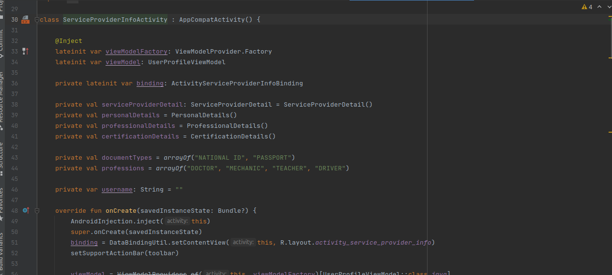
Client review screen
kazi/app/java/ke.co.kaziapp/ui/v1/review/ClientreviewFragment(class ClientReviewsFragment)
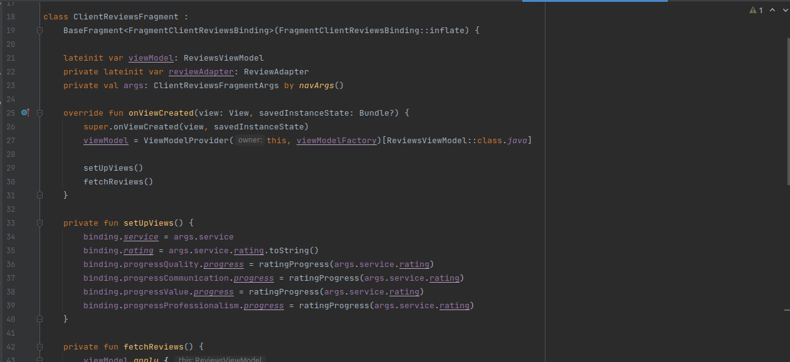
Terms and condition screen
kazi/app/java/ke.co.kaziapp/ui/v1/terms and conditions Activity,kt( class TermAndConditionsActivity : AppCompatActivity)

Chat screen
kazi/app/java/ke.co.kaziapp/ui/v1/ChatsActivity.kt( class Terms And Conditions Activity : AppCompatActivity)